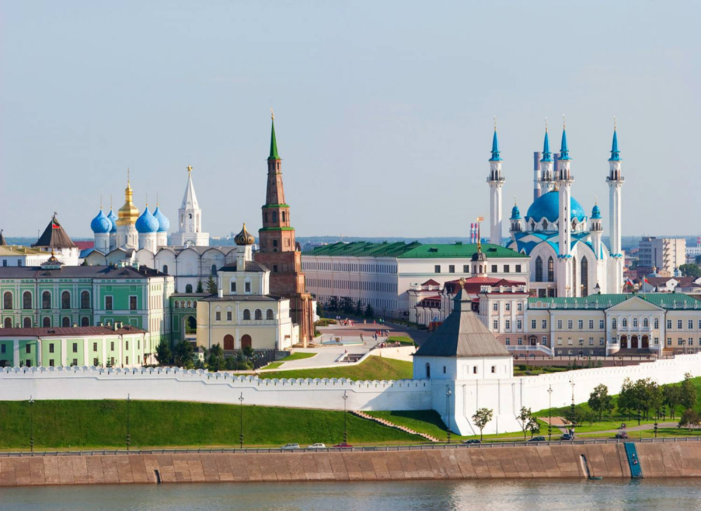

|  |
|
Каза́нь (тат. Казан) — город в России, столица Республики Татарстан, крупный порт на левом берегу реки Волги при впадении в неё реки Казанки. Крупнейший по численности населения город в Приволжском федеральном округе и на реке Волге. Один из крупнейших экономических, научных, образовательных, религиозных, культурных и спортивных центров России. Казанский кремль входит в число объектов Всемирного наследия ЮНЕСКО. Город Трудовой доблести.
Исторически столица (центр) Казанского ханства, Казанского уезда, Казанской губернии и Татарской АССР.
Город имеет зарегистрированный бренд «Третья столица России».
В 2005 году было отпраздновано тысячелетие Казани.
Казань расположена на левом берегу реки Волги, при впадении в неё реки Казанки, в 820 км к востоку от Москвы. Благодаря выгодному географическому расположению, Казань издавна была торговым посредником между Востоком и Западом. Географические координаты: 55°47,45′ с. ш. 49°6,87′ в. д.HGЯO (координаты так называемого «нулевого километра»).
Казань находится в часовой зоне МСК (московское время). Смещение применяемого времени относительно UTC составляет +3:00[12]. В соответствии с применяемым временем и географической долготой[13] средний солнечный полдень в Казани наступает в 11:44.
Волжская Булгария
Согласно официальной версии, принятой в настоящее время, город был основан более 1000 лет назад. Предполагаемая дата возникновения городского поселения на месте Казани — 1004—1005 годы. Основанием для такой датировки является найденная во время раскопок на территории Казанского кремля чешская монета, датированная правлением св. Вацлава (предположительно, чеканки 929—930 годов) и ставшая самой ранней чешской монетой, остатки каменной кладки и деревянной городской ограды, предметы ремёсел и утвари (накладка венгерского типа, женские бусы и прочее), а также другие артефакты с менее явной датировкой. По официальным утверждениям, к изучению находок, имеющих отношение к возрасту Казани, были привлечены специалисты из 20 городов России и из 22 стран мира.
Казанское ханство
В 1438 году булгарская крепость Казань (Иске-Казань) была захвачена свергнутым золотоордынским ханом Улу-Мухамеддом, который убил местного князя Лебедия и перенёс крепость на современное место (по русским летописям). Город стал столицей Казанского ханства. Развивалось производство кожаных, гончарных изделий, оружия. Казань имела торговые связи с Москвой, Крымом, Турцией и другими регионами.
Около 1469 года город посетил Афанасий Никитин, упомянувший его в своих путевых записках «Хожение за три моря».
Череда войн с Московским княжеством сначала вынудила Москву платить дань Казанскому ханству, а в итоге привела к взятию Казани войсками Ивана Грозного в 1552 году, с последующим разрушением большей части города и переселением татар на болотистые берега озера Кабан, где была заложена Старо-татарская слобода Казани. После окончательного подавления восстаний в Казанском крае у города началась новая эпоха в истории — в составе Русского царства.